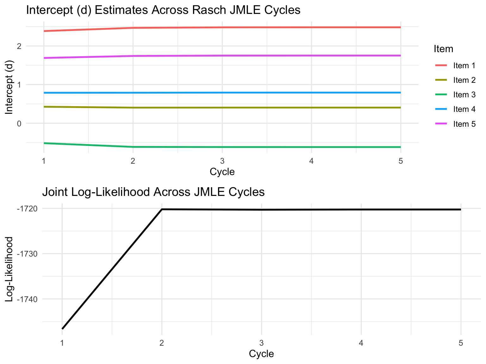
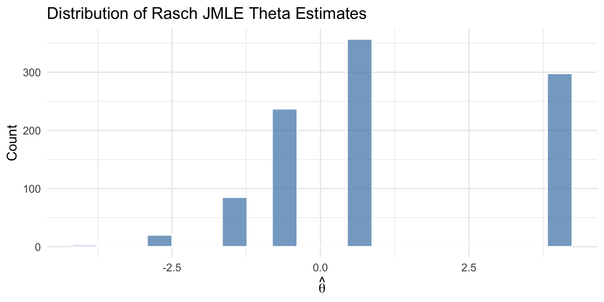
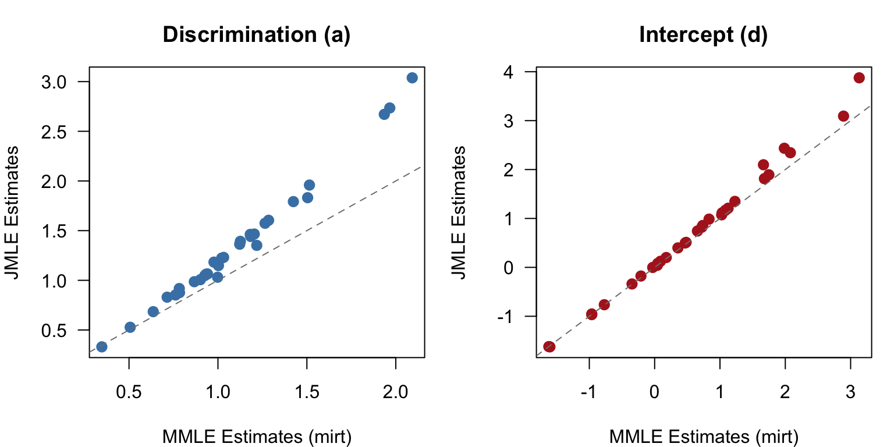
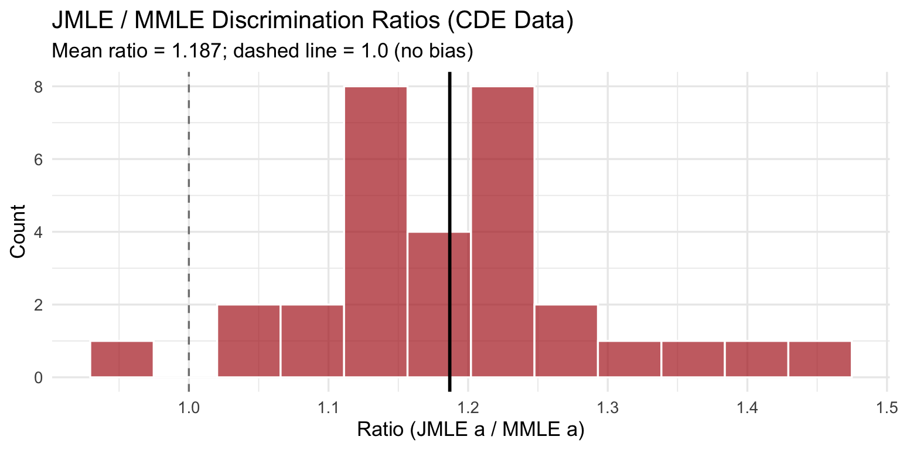
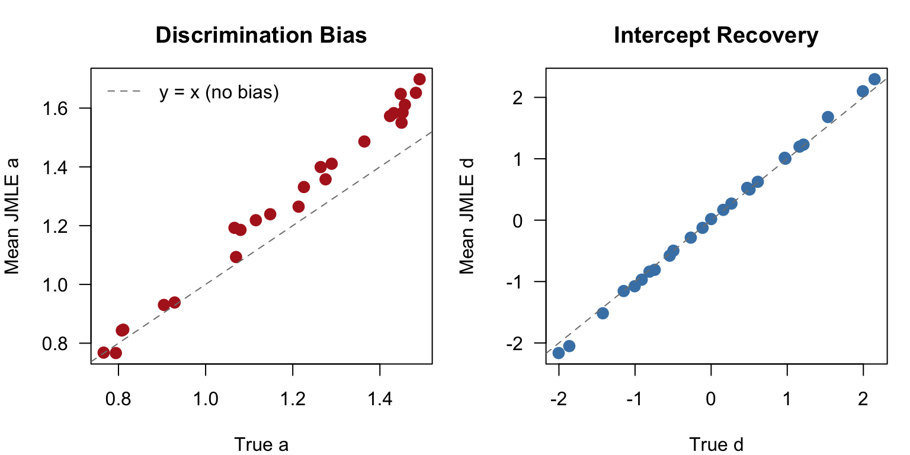

Code
library(ggplot2)
library(dplyr)
library(tidyr)
library(knitr)
library(mirt)From Intuition to Implementation
In the person parameter estimation module, we saw how to estimate a person’s ability (\(\theta\)) given known item parameters using Maximum Likelihood Estimation (MLE), MAP, and EAP. The Newton-Raphson algorithm found the \(\theta\) that maximized the likelihood of each person’s response pattern.
But where did those item parameters come from? In practice, they must be estimated from data too. Joint Maximum Likelihood Estimation (JMLE) is the most direct approach: estimate all item parameters and all person parameters simultaneously by maximizing the joint likelihood of the full data matrix.
JMLE has a long history in IRT, originating with Birnbaum (1968) and implemented in classic software like LOGIST (Wingersky, Barton, & Lord, 1982). Its appeal is its conceptual simplicity:
However, JMLE has a well-known limitation called the Neyman-Scott inconsistency: because the number of person parameters grows with sample size, the item parameter estimates (particularly discrimination) are biased. This motivates Marginal Maximum Likelihood Estimation (MMLE), which “integrates out” the person parameters and produces consistent item estimates.
This module walks through JMLE from scratch, implements it in R, and demonstrates both its strengths and its limitations. We begin with the Rasch (1PL) model on a small dataset to illustrate the algorithm clearly, then extend to the 2PL model on a larger dataset where the additional slope parameter can be estimated stably. By understanding JMLE first, you’ll be well prepared to appreciate why MMLE was developed as an improvement.
This module builds from the more technical presentation of JMLE found in Chapter 4 of Baker and Kim (2004).
library(ggplot2)
library(dplyr)
library(tidyr)
library(knitr)
library(mirt)We use the 2PL model with an intercept/slope parameterization:
\[P_i(\theta) = \frac{1}{1 + \exp(-(d_i + a_i\theta))}\]
where \(d_i\) is the intercept and \(a_i\) is the slope (discrimination). The usual difficulty parameter is \(b_i = -d_i / a_i\). This is the same parameterization used in the MMLE module.
The Rasch (1PL) model is the special case where all slopes are fixed at \(a_i = 1\), leaving only the intercept \(d_i\) to be estimated for each item.
# 2PL probability using intercept/slope parameterization
P_icc <- function(theta, d, a) {
1 / (1 + exp(-(d + a * theta)))
}
# 2PL probability using traditional a/b parameterization
p_2pl <- function(theta, a, b) {
1 / (1 + exp(-a * (theta - b)))
}Suppose we have \(N\) examinees responding to \(n\) items. The data is a matrix \(\mathbf{U}\) where \(u_{ij} = 1\) if examinee \(j\) answers item \(i\) correctly and \(u_{ij} = 0\) otherwise. Under the assumption of local independence, the joint likelihood is the product of all individual response probabilities:
\[L(\boldsymbol{\xi}, \boldsymbol{\theta} \mid \mathbf{U}) = \prod_{j=1}^{N} \prod_{i=1}^{n} P_i(\theta_j)^{u_{ij}} \, Q_i(\theta_j)^{1-u_{ij}}\]
where \(\boldsymbol{\xi} = \{d_1, a_1, \ldots, d_n, a_n\}\) is the full set of item parameters and \(\boldsymbol{\theta} = \{\theta_1, \ldots, \theta_N\}\) is the full set of person parameters.
Taking the natural logarithm:
\[\log L = \sum_{j=1}^{N} \sum_{i=1}^{n} \left[u_{ij} \log P_i(\theta_j) + (1 - u_{ij}) \log Q_i(\theta_j)\right]\]
The key feature of JMLE: both \(\boldsymbol{\xi}\) and \(\boldsymbol{\theta}\) are treated as unknown parameters to be estimated. For a test with 5 items and 1000 examinees, that’s \(2 \times 5 + 1000 = 1010\) parameters to estimate simultaneously! As we’ll see, this large number of parameters is both what makes JMLE intuitive and what ultimately causes problems.
To find the parameter values that maximize the joint log-likelihood, we take partial derivatives with respect to each parameter, set them equal to zero, and solve. The chain rule gives us the score equations.
For item \(i\), the ICC depends on \(d_i\) and \(a_i\) through the linear combination \(d_i + a_i \theta\). By the chain rule:
\[\frac{\partial P_i}{\partial d_i} = P_i \, Q_i \cdot 1 \qquad \frac{\partial P_i}{\partial a_i} = P_i \, Q_i \cdot \theta\]
Differentiating the log-likelihood with respect to \(d_i\) and setting it to zero gives the intercept equation:
\[\frac{\partial \log L}{\partial d_i} = \sum_{j=1}^{N} \left[u_{ij} - P_i(\theta_j)\right] = 0\]
Differentiating with respect to \(a_i\) and setting it to zero gives the slope equation:
\[\frac{\partial \log L}{\partial a_i} = \sum_{j=1}^{N} \left[u_{ij} - P_i(\theta_j)\right] \theta_j = 0\]
The two equations are identical except that the slope equation weights each term by \(\theta_j\). This is the same logic as in logistic regression: the score equation for the intercept has no covariate multiplier, while the score equation for the slope is multiplied by the covariate value. Here, the “covariate” is the person’s ability \(\theta_j\).
Differentiating the log-likelihood with respect to \(\theta_j\) and setting it to zero gives the person equation:
\[\frac{\partial \log L}{\partial \theta_j} = \sum_{i=1}^{n} a_i \left[u_{ij} - P_i(\theta_j)\right] = 0\]
You’ve already seen this equation in the person parameter estimation module! It says: find the \(\theta_j\) where the weighted sum of residuals (observed minus predicted) equals zero, with each item weighted by its discrimination \(a_i\).
All three equations share the same structure: weighted residuals must sum to zero. The term \(u_{ij} - P_i(\theta_j)\) is the residual — the difference between what was actually observed (0 or 1) and what the model predicts (a probability). At the optimal parameter values:
| Equation | What it ensures | Weighted by |
|---|---|---|
| Intercept (\(d_i\)) | Overall proportion correct on item \(i\) matches the model | Nothing (equal weight) |
| Slope (\(a_i\)) | The trend of performance across ability levels matches the model | \(\theta_j\) (ability level) |
| Person (\(\theta_j\)) | Person \(j\)’s total “weighted score” matches the model | \(a_i\) (discrimination) |
Later, in the MMLE module, you will see equations that look almost identical to the item equations above. The difference is that MMLE replaces the individual observed data (\(u_{ij}\) at estimated \(\theta_j\)) with expected data (expected proportions at quadrature nodes). The structural parallel is the key to understanding both approaches.
Since we can’t solve all the equations simultaneously in closed form, JMLE uses an alternating procedure: fix one set of parameters, estimate the other, then switch.
| Step | What it does | Analogy |
|---|---|---|
| 1. Initialize | Set starting values: \(d_i = 0\), \(a_i = 1\) for all items | “Assume all items are identical with moderate difficulty” |
| 2. Person step | Given current item parameters, estimate each \(\theta_j\) via Newton-Raphson | “If these were the true item parameters, where would each examinee fall?” (This is exactly the person estimation module!) |
| 3. Constraint step | Center \(\theta\) estimates to have mean \(= 0\) | “Re-anchor the ability scale so it doesn’t drift” |
| 4. Item step | Given current \(\theta\) estimates, re-estimate item parameters via Newton-Raphson | “Given where we think examinees fall, what item parameters best fit the responses?” |
| 5. Check convergence | If parameters have stopped changing, stop. Otherwise, go to step 2. | “Are we there yet?” |
This is conceptually simple: estimate persons as if items were known, then estimate items as if persons were known, and repeat.
The constraint step is needed for identifiability: without it, the algorithm could shift all \(\theta\) values up by a constant while shifting all intercepts down by the same amount, leaving the likelihood unchanged. Centering \(\theta\) at zero pins the location of the ability scale.
This is the same Newton-Raphson you used in the person parameter estimation module. For examinee \(j\):
\[\theta_j^{(t+1)} = \theta_j^{(t)} + \frac{\sum_{i=1}^{n} a_i \left[u_{ij} - P_i(\theta_j^{(t)})\right]}{\sum_{i=1}^{n} a_i^2 \, P_i(\theta_j^{(t)}) \, Q_i(\theta_j^{(t)})}\]
The numerator is the score function (first derivative of the log-likelihood with respect to \(\theta\)). The denominator is the Fisher information (negative expected second derivative).
For the Rasch model (\(a_i = 1\) fixed), the item step is a simple 1-dimensional Newton-Raphson for \(d_i\):
\[d_i^{(t+1)} = d_i^{(t)} + \frac{\sum_{j=1}^{N} \left[u_{ij} - P_i(\theta_j)\right]}{\sum_{j=1}^{N} P_i(\theta_j) \, Q_i(\theta_j)}\]
For the 2PL model, we solve a 2-dimensional Newton-Raphson for \((d_i, a_i)\). The update requires the \(2 \times 2\) Fisher information matrix and its inverse:
\[\begin{bmatrix} d_i^{(t+1)} \\ a_i^{(t+1)} \end{bmatrix} = \begin{bmatrix} d_i^{(t)} \\ a_i^{(t)} \end{bmatrix} + \mathbf{I}^{-1} \begin{bmatrix} g_d \\ g_a \end{bmatrix}\]
where \(g_d = \sum_j (u_{ij} - P_i)\) and \(g_a = \sum_j (u_{ij} - P_i) \theta_j\) are the score equations, and \(\mathbf{I}\) is the Fisher information matrix with elements \(I_{dd} = \sum_j W_j\), \(I_{da} = \sum_j W_j \theta_j\), \(I_{aa} = \sum_j W_j \theta_j^2\), where \(W_j = P_i(\theta_j) Q_i(\theta_j)\).
We’ll implement JMLE using the LSAT-6 dataset from Bock and Lieberman (1970), the same dataset used in the MMLE module. This gives us:
We begin with the Rasch (1PL) model, which fixes all discriminations at \(a_i = 1\) and estimates only the intercepts \(d_i\). This keeps the algorithm simple and numerically stable, letting us focus on the mechanics of JMLE before introducing the 2PL.
# All 32 possible response patterns for 5 items
patterns <- as.matrix(expand.grid(rep(list(0:1), 5))[, 5:1])
colnames(patterns) <- paste0("Item", 1:5)
# Frequency of each pattern in the LSAT-6 sample (Baker & Kim, Appendix D)
freq <- c(3, 6, 2, 11, 1, 1, 3, 4, 1, 8, 0, 16, 0, 3, 2, 15,
10, 29, 14, 81, 3, 28, 15, 80, 16, 56, 21, 173, 11, 61, 28, 298)
N <- sum(freq) # Total examinees
n_items <- 5
n_patterns <- nrow(patterns)
cat("Total examinees:", N, "\n")Total examinees: 1000 cat("Number of items:", n_items, "\n")Number of items: 5 cat("Unique response patterns:", n_patterns, "\n")Unique response patterns: 32 # Show top patterns by frequency
df_patterns <- data.frame(patterns, Freq = freq)
df_patterns$Pattern <- apply(patterns, 1, paste, collapse = "")
df_patterns <- df_patterns[order(-df_patterns$Freq), ]
kable(head(df_patterns[, c("Pattern", "Freq")], 10),
row.names = FALSE,
caption = "10 Most Common Response Patterns")| Pattern | Freq |
|---|---|
| 11111 | 298 |
| 11011 | 173 |
| 10011 | 81 |
| 10111 | 80 |
| 11101 | 61 |
| 11001 | 56 |
| 10001 | 29 |
| 10101 | 28 |
| 11110 | 28 |
| 11010 | 21 |
# Expand patterns to full response matrix (1000 x 5)
resp_matrix <- patterns[rep(1:n_patterns, freq), ]
colnames(resp_matrix) <- paste0("Item", 1:5)
cat("Response matrix dimensions:", nrow(resp_matrix), "x", ncol(resp_matrix), "\n")Response matrix dimensions: 1000 x 5 # Proportion correct for each item
p_correct <- colMeans(resp_matrix)
cat("\nProportion correct:\n")
Proportion correct:for (i in 1:n_items) cat(" Item", i, ":", round(p_correct[i], 3), "\n") Item 1 : 0.924
Item 2 : 0.709
Item 3 : 0.553
Item 4 : 0.763
Item 5 : 0.87 The person step estimates \(\theta_j\) for each examinee using Newton-Raphson, holding item parameters fixed. This is the same procedure from the person parameter estimation module. The function works for both Rasch and 2PL — for Rasch, we simply pass a = rep(1, J).
# Newton-Raphson for a single person's theta
estimate_theta_j <- function(u, d, a, theta_init = 0,
max_iter = 25, tol = 0.001) {
theta <- theta_init
for (iter in 1:max_iter) {
P <- P_icc(theta, d, a)
Q <- 1 - P
# Score function: sum of a_i * (u_i - P_i)
score <- sum(a * (u - P))
# Fisher information: sum of a_i^2 * P_i * Q_i
info <- sum(a^2 * P * Q)
if (info < 1e-10) break
delta <- score / info
theta <- theta + delta
if (abs(delta) < tol) break
# Bound theta to prevent divergence
theta <- max(min(theta, 5), -5)
}
return(theta)
}Handling extreme scores: Examinees with perfect scores (all correct) or zero scores (all incorrect) have no finite MLE, just as we saw in the person parameter estimation module. We handle these by assigning boundary values.
# Initialize item parameters: d = 0, a = 1 for all items (Rasch)
d_est <- rep(0, n_items)
a_est <- rep(1, n_items)
# Identify extreme scores
raw_scores <- rowSums(resp_matrix)
is_extreme <- raw_scores == 0 | raw_scores == n_items
cat("Perfect scores (all correct):", sum(raw_scores == n_items), "examinees\n")Perfect scores (all correct): 298 examineescat("Zero scores (all incorrect):", sum(raw_scores == 0), "examinees\n")Zero scores (all incorrect): 3 examineescat("Non-extreme examinees:", sum(!is_extreme), "\n")Non-extreme examinees: 699 # Run person step for all examinees (Cycle 1)
theta_est <- numeric(N)
for (j in 1:N) {
if (raw_scores[j] == 0) {
theta_est[j] <- -4 # Boundary value for zero scores
} else if (raw_scores[j] == n_items) {
theta_est[j] <- 4 # Boundary value for perfect scores
} else {
theta_est[j] <- estimate_theta_j(resp_matrix[j, ], d_est, a_est)
}
}
cat("Theta estimates after person step (Cycle 1):\n")Theta estimates after person step (Cycle 1):cat(" Mean:", round(mean(theta_est), 4), "\n") Mean: 1.7088 cat(" SD: ", round(sd(theta_est), 4), "\n") SD: 1.6359 cat(" Range:", round(range(theta_est), 4), "\n") Range: -4 4 With initial Rasch parameters (\(d = 0\), \(a = 1\) for all items), the \(\theta\) estimates depend only on the raw score. In fact, the MLE for the Rasch model has a closed-form relationship to the raw score: \(\hat{\theta} = \log(r / (n - r))\), where \(r\) is the number correct and \(n\) is the number of items.
# Show theta by raw score
theta_score <- data.frame(Score = raw_scores, Theta = theta_est)
theta_unique <- theta_score %>%
group_by(Score) %>%
summarize(Theta = round(mean(Theta), 4), N = n())
kable(theta_unique, caption = "Theta Estimates by Raw Score (Cycle 1)")| Score | Theta | N |
|---|---|---|
| 0 | -4.0000 | 3 |
| 1 | -1.3863 | 20 |
| 2 | -0.4055 | 85 |
| 3 | 0.4055 | 237 |
| 4 | 1.3863 | 357 |
| 5 | 4.0000 | 298 |
After estimating \(\theta\) values, we center them to mean = 0 (using only non-extreme examinees):
# Center theta (excluding extreme scores from the mean computation)
theta_mean <- mean(theta_est[!is_extreme])
cat("Mean of non-extreme thetas before centering:", round(theta_mean, 4), "\n")Mean of non-extreme thetas before centering: 0.7565 theta_est <- theta_est - theta_mean
cat("Mean after centering:", round(mean(theta_est[!is_extreme]), 4), "\n")Mean after centering: 0 For the Rasch model, the item step estimates only \(d_i\) for each item (with \(a_i = 1\) fixed). This is a simple 1-dimensional Newton-Raphson:
# Rasch item step: 1D Newton-Raphson for d (a = 1 fixed)
d_new <- d_est
for (i in 1:n_items) {
# Inner NR loop for item i
for (nr in 1:10) {
P <- P_icc(theta_est, d_new[i], 1)
# Score equation: sum of residuals
g_d <- sum(resp_matrix[, i] - P)
# Fisher information
H_dd <- sum(P * (1 - P))
if (H_dd < 1e-10) break
delta <- g_d / H_dd
d_new[i] <- d_new[i] + delta
if (abs(delta) < 0.001) break
}
}
b_new <- -d_new # For Rasch: b = -d/a = -d
cat("After Cycle 1:\n")After Cycle 1:kable(data.frame(
Item = 1:5,
Intercept_d = round(d_new, 4),
Difficulty_b = round(b_new, 4)
), row.names = FALSE, caption = "Item Parameter Estimates After 1 Rasch JMLE Cycle")| Item | Intercept_d | Difficulty_b |
|---|---|---|
| 1 | 2.3858 | -2.3858 |
| 2 | 0.4260 | -0.4260 |
| 3 | -0.5170 | 0.5170 |
| 4 | 0.7882 | -0.7882 |
| 5 | 1.6893 | -1.6893 |
The items with higher proportions correct (easier items) get positive \(d\) values, while harder items get negative values.
Now we put it all together and iterate until convergence:
run_rasch_jmle <- function(resp, max_cycles = 50, tol = 0.001, verbose = FALSE) {
N <- nrow(resp)
J <- ncol(resp)
a <- rep(1, J) # Fixed at 1 for Rasch
d <- rep(0, J)
theta <- rep(0, N)
# Identify extreme scores
scores <- rowSums(resp)
extreme <- scores == 0 | scores == J
# Storage for tracking convergence
history <- data.frame()
for (cycle in 1:max_cycles) {
# --- Person Step ---
for (j in 1:N) {
if (scores[j] == 0) {
theta[j] <- -4
} else if (scores[j] == J) {
theta[j] <- 4
} else {
theta[j] <- estimate_theta_j(resp[j, ], d, a, theta_init = theta[j])
}
}
# --- Constraint Step: center theta ---
theta <- theta - mean(theta[!extreme])
# --- Item Step: 1D Newton-Raphson for d ---
d_old <- d
for (i in 1:J) {
for (nr in 1:10) {
P <- P_icc(theta, d[i], 1)
g_d <- sum(resp[, i] - P)
H_dd <- sum(P * (1 - P))
if (H_dd < 1e-10) break
delta <- g_d / H_dd
d[i] <- d[i] + delta
if (abs(delta) < 0.001) break
}
}
# Compute log-likelihood
P_mat <- matrix(NA, N, J)
for (i in 1:J) P_mat[, i] <- P_icc(theta, d[i], 1)
P_mat <- pmax(pmin(P_mat, 1 - 1e-10), 1e-10)
loglik <- sum(resp * log(P_mat) + (1 - resp) * log(1 - P_mat))
# Record history
for (i in 1:J) {
history <- rbind(history, data.frame(
Cycle = cycle, Item = i, d = d[i], LogLik = loglik
))
}
# Check convergence
max_change <- max(abs(d - d_old))
if (verbose) cat("Cycle", cycle, "- Max change:", round(max_change, 6),
"- LogLik:", round(loglik, 2), "\n")
if (max_change < tol & cycle > 2) break
}
list(d = d, b = -d, theta = theta, history = history, n_cycles = cycle)
}# Run Rasch JMLE on LSAT-6 data
rasch_result <- run_rasch_jmle(resp_matrix, max_cycles = 50, tol = 0.001,
verbose = TRUE)Cycle 1 - Max change: 2.385776 - LogLik: -1746.66
Cycle 2 - Max change: 0.096594 - LogLik: -1720.2
Cycle 3 - Max change: 0.012925 - LogLik: -1720.3
Cycle 4 - Max change: 0.001167 - LogLik: -1720.25
Cycle 5 - Max change: 0.000127 - LogLik: -1720.25 cat("\nConverged after", rasch_result$n_cycles, "cycles\n\n")
Converged after 5 cyclescat("Final Rasch JMLE estimates:\n")Final Rasch JMLE estimates:kable(data.frame(
Item = 1:5,
Intercept_d = round(rasch_result$d, 4),
Difficulty_b = round(rasch_result$b, 4)
), row.names = FALSE, caption = "Final Rasch JMLE Item Parameter Estimates")| Item | Intercept_d | Difficulty_b |
|---|---|---|
| 1 | 2.4830 | -2.4830 |
| 2 | 0.4042 | -0.4042 |
| 3 | -0.6180 | 0.6180 |
| 4 | 0.7925 | -0.7925 |
| 5 | 1.7513 | -1.7513 |
Convergence is fast — typically within 5-10 cycles. This is characteristic of JMLE for the Rasch model: with only one parameter per item and the raw score as a sufficient statistic for \(\theta\), the alternating algorithm settles quickly.
hist_df <- rasch_result$history
hist_df$Item <- factor(hist_df$Item, labels = paste("Item", 1:5))
p1 <- ggplot(hist_df, aes(x = Cycle, y = d, color = Item)) +
geom_line(linewidth = 1) +
labs(title = "Intercept (d) Estimates Across Rasch JMLE Cycles",
y = "Intercept (d)") +
theme_minimal(base_size = 12) +
theme(legend.position = "right")
p2 <- ggplot(hist_df[hist_df$Item == "Item 1", ],
aes(x = Cycle, y = LogLik)) +
geom_line(linewidth = 1, color = "black") +
labs(title = "Joint Log-Likelihood Across JMLE Cycles",
y = "Log-Likelihood") +
theme_minimal(base_size = 12)
gridExtra::grid.arrange(p1, p2, ncol = 1)
The log-likelihood increases monotonically at each cycle — a fundamental property of the alternating optimization approach.
theta_df <- data.frame(theta = rasch_result$theta,
score = rowSums(resp_matrix))
ggplot(theta_df, aes(x = theta)) +
geom_histogram(bins = 20, fill = "steelblue", alpha = 0.7, color = "white") +
labs(title = "Distribution of Rasch JMLE Theta Estimates",
x = expression(hat(theta)), y = "Count") +
theme_minimal(base_size = 13)
theta_final <- theta_df %>%
group_by(score) %>%
summarize(Theta = round(mean(theta), 4),
N = n(), .groups = "drop")
kable(theta_final, col.names = c("Raw Score", "Theta Estimate", "N"),
caption = "Final Rasch JMLE Theta Estimates by Raw Score")| Raw Score | Theta Estimate | N |
|---|---|---|
| 0 | -3.9721 | 3 |
| 1 | -2.6439 | 20 |
| 2 | -1.4492 | 85 |
| 3 | -0.4215 | 237 |
| 4 | 0.7730 | 357 |
| 5 | 4.0279 | 298 |
In the Rasch model, all examinees with the same raw score receive the same \(\theta\) estimate. This is because the raw score is a sufficient statistic for \(\theta\) in the Rasch model — it captures all the information in the response pattern about the examinee’s ability.
A well-known result for the Rasch model is that JMLE item parameter estimates are biased (Wright & Douglas, 1977). Specifically, the JMLE estimates of item difficulty converge to \(\frac{n}{n-1}\) times the true values, where \(n\) is the number of items. With 5 items, this means the JMLE estimates are inflated (farther from zero) by a factor of \(5/4 = 1.25\).
The correction is simple: multiply the JMLE estimates by \(\frac{n-1}{n}\). This approximates what conditional maximum likelihood (CML) would give — the gold standard for Rasch calibration, which conditions on the sufficient statistics and avoids the incidental parameter problem entirely.
# Apply the (n-1)/n bias correction to our JMLE estimates
correction <- (n_items - 1) / n_items # = 4/5 = 0.8
d_corrected <- rasch_result$d * correction
b_corrected <- rasch_result$b * correction
# Comparison table
comp_rasch <- data.frame(
Item = 1:5,
JMLE_d = round(rasch_result$d, 4),
Corrected_d = round(d_corrected, 4),
JMLE_b = round(rasch_result$b, 4),
Corrected_b = round(b_corrected, 4)
)
kable(comp_rasch,
col.names = c("Item", "JMLE d", "Corrected d",
"JMLE b", "Corrected b"),
caption = "Rasch JMLE Estimates and Bias-Corrected Values")| Item | JMLE d | Corrected d | JMLE b | Corrected b |
|---|---|---|---|---|
| 1 | 2.4830 | 1.9864 | -2.4830 | -1.9864 |
| 2 | 0.4042 | 0.3233 | -0.4042 | -0.3233 |
| 3 | -0.6180 | -0.4944 | 0.6180 | 0.4944 |
| 4 | 0.7925 | 0.6340 | -0.7925 | -0.6340 |
| 5 | 1.7513 | 1.4010 | -1.7513 | -1.4010 |
The correction brings the estimates 20% closer to zero. With more items, the correction is smaller (e.g., \(29/30 \approx 0.97\) for a 30-item test), which is why the Rasch JMLE bias is less of a concern for longer tests.
This known, correctable bias for Rasch JMLE is relatively benign. The situation becomes more problematic when we move to the 2PL model, where the discrimination parameter is biased and there is no simple correction formula.
The 2PL model estimates two parameters per item: the intercept \(d_i\) and the slope \(a_i\). Estimating the slope requires enough spread in \(\theta\) estimates to capture the item’s discrimination pattern — that is, the algorithm needs to observe how the probability of a correct response changes across the ability scale, not just its overall level.
With only 5 items like LSAT-6, the \(\theta\) estimates take on very few distinct values (only 4 for non-extreme scorers). This provides insufficient information for stable 2PL estimation in the alternating JMLE framework. With a longer test, the \(\theta\) estimates span a much richer range of values, enabling the algorithm to reliably estimate both item parameters.
We’ll demonstrate 2PL JMLE using the CDE mathematics data — the same dataset from the person parameter estimation module — which has 31 items, providing ample information for the 2PL.
For the 2PL model, the item step estimates \((d_i, a_i)\) jointly using a 2-dimensional Newton-Raphson. This mirrors the m_step_item() function from the MMLE module, but instead of summing over quadrature nodes weighted by expected counts, we sum over individual examinees.
# Newton-Raphson for a single item's (d, a) under the 2PL
estimate_item_i <- function(theta, u_i, d_init, a_init,
max_iter = 10, tol = 0.001) {
d <- d_init
a <- a_init
for (iter in 1:max_iter) {
P <- P_icc(theta, d, a)
W <- P * (1 - P)
# Residuals
resid <- u_i - P
# Score equations (gradient)
g_d <- sum(resid)
g_a <- sum(resid * theta)
# Fisher information matrix elements
I_dd <- sum(W)
I_da <- sum(W * theta)
I_aa <- sum(W * theta^2)
# Determinant
det_I <- I_dd * I_aa - I_da^2
if (abs(det_I) < 1e-6) break
# Newton-Raphson increments (using inverse of Fisher info)
delta_d <- (I_aa * g_d - I_da * g_a) / det_I
delta_a <- (I_dd * g_a - I_da * g_d) / det_I
d <- d + delta_d
a <- a + delta_a
# Keep a positive
a <- max(a, 0.01)
# Convergence check
if (max(abs(delta_d), abs(delta_a)) < tol) break
# Bounds check
if (abs(d) > 30 | abs(a) > 20) break
}
return(c(d = d, a = a))
}run_2pl_jmle <- function(resp, max_cycles = 100, tol = 0.001, verbose = FALSE) {
N <- nrow(resp)
J <- ncol(resp)
# Initialize
d <- rep(0, J)
a <- rep(1, J)
theta <- rep(0, N)
# Identify extreme scores
scores <- rowSums(resp)
extreme <- scores == 0 | scores == J
ne <- !extreme # non-extreme examinees
# Storage for tracking convergence
history <- data.frame()
for (cycle in 1:max_cycles) {
# --- Person Step ---
for (j in 1:N) {
if (scores[j] == 0) {
theta[j] <- -4
} else if (scores[j] == J) {
theta[j] <- 4
} else {
theta[j] <- estimate_theta_j(resp[j, ], d, a, theta_init = theta[j])
}
}
# --- Constraint Step: center theta ---
theta <- theta - mean(theta[ne])
# --- Item Step: 2D Newton-Raphson for (d, a) ---
# Use only non-extreme examinees to avoid boundary theta values
# distorting the slope estimation
d_old <- d
a_old <- a
for (i in 1:J) {
result <- estimate_item_i(theta[ne], resp[ne, i], d[i], a[i])
d[i] <- result["d"]
a[i] <- result["a"]
}
# Record history
for (i in 1:J) {
history <- rbind(history, data.frame(
Cycle = cycle, Item = i, d = d[i], a = a[i], b = -d[i] / a[i]
))
}
# Check convergence
max_change <- max(abs(c(d - d_old, a - a_old)))
if (verbose && cycle <= 10) {
cat("Cycle", cycle, "- Max change:", round(max_change, 6), "\n")
}
if (max_change < tol & cycle > 3) break
}
list(d = d, a = a, b = -d / a, theta = theta,
history = history, n_cycles = cycle)
}The key implementation detail: in the item step, we use only non-extreme examinees (ne). Extreme scorers have boundary \(\theta\) values (\(\pm 4\)) that are not true MLEs but placeholders — including them in the slope estimation could distort the results.
cde <- read.csv("/Users/briggsd/Library/CloudStorage/Dropbox/Courses/EDUC 8720/Data Sets/MASC-CDE/cde_subsample_math.csv")
cde_matrix <- as.matrix(cde)
cat("CDE data:", nrow(cde_matrix), "students,", ncol(cde_matrix), "items\n")CDE data: 1500 students, 31 items# Check for extreme scores
cde_scores <- rowSums(cde_matrix)
cat("Perfect scores:", sum(cde_scores == ncol(cde_matrix)), "\n")Perfect scores: 2 cat("Zero scores:", sum(cde_scores == 0), "\n")Zero scores: 1 # Run 2PL JMLE on CDE data
jmle_cde <- run_2pl_jmle(cde_matrix, max_cycles = 100, tol = 0.001, verbose = TRUE)Cycle 1 - Max change: 3.184273
Cycle 2 - Max change: 0.395565
Cycle 3 - Max change: 0.170844
Cycle 4 - Max change: 0.082977
Cycle 5 - Max change: 0.042162
Cycle 6 - Max change: 0.021767
Cycle 7 - Max change: 0.011286
Cycle 8 - Max change: 0.00585
Cycle 9 - Max change: 0.003026
Cycle 10 - Max change: 0.001561 cat("\nConverged after", jmle_cde$n_cycles, "cycles\n")
Converged after 11 cycles# Fit 2PL with mirt (MMLE/EM) for comparison
mod_cde <- mirt(cde, model = 1, itemtype = "2PL", method = "EM", verbose = FALSE)
# Extract parameters
cde_mmle_pars <- coef(mod_cde, IRTpars = FALSE, simplify = TRUE)$items
cde_mmle_irt <- coef(mod_cde, IRTpars = TRUE, simplify = TRUE)$itemscde_comp <- data.frame(
Item = colnames(cde),
JMLE_a = round(jmle_cde$a, 3),
MMLE_a = round(cde_mmle_pars[, "a1"], 3),
Ratio_a = round(jmle_cde$a / cde_mmle_pars[, "a1"], 3),
JMLE_d = round(jmle_cde$d, 3),
MMLE_d = round(cde_mmle_pars[, "d"], 3)
)
kable(cde_comp,
col.names = c("Item", "JMLE a", "MMLE a", "Ratio (a)",
"JMLE d", "MMLE d"),
caption = "2PL JMLE vs. MMLE (mirt) Estimates for CDE Math Data")| Item | JMLE a | MMLE a | Ratio (a) | JMLE d | MMLE d | |
|---|---|---|---|---|---|---|
| V1 | V1 | 1.223 | 1.021 | 1.198 | 1.166 | 1.082 |
| V2 | V2 | 0.917 | 0.783 | 1.172 | 1.074 | 1.026 |
| V3 | V3 | 1.792 | 1.424 | 1.258 | 0.986 | 0.833 |
| V4 | V4 | 1.466 | 1.204 | 1.217 | 1.349 | 1.229 |
| V5 | V5 | 1.062 | 0.934 | 1.137 | 0.398 | 0.356 |
| V6 | V6 | 0.986 | 0.867 | 1.137 | -0.002 | -0.029 |
| V7 | V7 | 0.830 | 0.714 | 1.162 | 0.499 | 0.469 |
| V8 | V8 | 1.048 | 0.926 | 1.131 | 0.081 | 0.047 |
| V9 | V9 | 2.735 | 1.966 | 1.391 | 2.098 | 1.666 |
| V10 | V10 | 1.441 | 1.184 | 1.217 | 0.822 | 0.723 |
| V11 | V11 | 1.462 | 1.182 | 1.237 | 1.893 | 1.748 |
| V12 | V12 | 2.670 | 1.935 | 1.380 | 2.435 | 1.985 |
| V13 | V13 | 1.392 | 1.126 | 1.237 | 1.814 | 1.680 |
| V14 | V14 | 0.852 | 0.761 | 1.120 | 0.201 | 0.178 |
| V15 | V15 | 1.604 | 1.285 | 1.249 | 3.093 | 2.891 |
| V16 | V16 | 3.038 | 2.092 | 1.452 | 3.876 | 3.132 |
| V17 | V17 | 1.231 | 1.032 | 1.193 | 1.115 | 1.033 |
| V18 | V18 | 0.876 | 0.784 | 1.118 | 0.511 | 0.482 |
| V19 | V19 | 1.959 | 1.514 | 1.293 | 2.344 | 2.078 |
| V20 | V20 | 1.352 | 1.218 | 1.110 | -1.625 | -1.604 |
| V21 | V21 | 1.574 | 1.265 | 1.245 | 0.856 | 0.736 |
| V22 | V22 | 1.363 | 1.122 | 1.215 | 0.743 | 0.655 |
| V23 | V23 | 0.330 | 0.347 | 0.952 | 0.042 | 0.042 |
| V24 | V24 | 1.064 | 0.941 | 1.131 | 0.125 | 0.089 |
| V25 | V25 | 1.183 | 0.978 | 1.210 | 1.209 | 1.125 |
| V26 | V26 | 1.832 | 1.504 | 1.218 | -0.953 | -0.962 |
| V27 | V27 | 1.148 | 1.003 | 1.145 | -0.177 | -0.210 |
| V28 | V28 | 0.684 | 0.636 | 1.076 | -0.339 | -0.346 |
| V29 | V29 | 1.031 | 0.998 | 1.033 | -1.620 | -1.620 |
| V30 | V30 | 1.006 | 0.901 | 1.117 | -0.764 | -0.770 |
| V31 | V31 | 0.527 | 0.507 | 1.041 | -0.966 | -0.963 |
cat("Correlation between JMLE and MMLE discrimination estimates:",
round(cor(jmle_cde$a, cde_mmle_pars[, "a1"]), 4), "\n")Correlation between JMLE and MMLE discrimination estimates: 0.9927 cat("Mean ratio of JMLE a / MMLE a:",
round(mean(jmle_cde$a / cde_mmle_pars[, "a1"]), 3), "\n")Mean ratio of JMLE a / MMLE a: 1.187 cat("Range of ratios:",
round(range(jmle_cde$a / cde_mmle_pars[, "a1"]), 3), "\n")Range of ratios: 0.952 1.452 par(mfrow = c(1, 2), mar = c(4, 4, 3, 1))
# Discrimination comparison
plot(cde_mmle_pars[, "a1"], jmle_cde$a,
pch = 19, col = "steelblue", cex = 1.2,
xlab = "MMLE Estimates (mirt)", ylab = "JMLE Estimates",
main = "Discrimination (a)", las = 1)
abline(0, 1, lty = 2, col = "gray50")
# Intercept comparison
plot(cde_mmle_pars[, "d"], jmle_cde$d,
pch = 19, col = "firebrick", cex = 1.2,
xlab = "MMLE Estimates (mirt)", ylab = "JMLE Estimates",
main = "Intercept (d)", las = 1)
abline(0, 1, lty = 2, col = "gray50")
Notice a systematic pattern: JMLE discrimination estimates are consistently larger than MMLE estimates. The points in the left panel fall above the identity line. The mean ratio of JMLE-to-MMLE discrimination is around 1.2, meaning JMLE inflates discriminations by roughly 20%. The intercept estimates, by contrast, show close agreement.
This is not a coincidence — it’s a direct consequence of the Neyman-Scott inconsistency, which we examine next.
The Neyman-Scott (1948) problem arises when the number of parameters grows with the sample size. In JMLE:
In standard statistics, consistency requires that the amount of information per parameter grows with sample size. But in JMLE, each new examinee brings one new observation per item and one new parameter. The ratio of information to parameters doesn’t improve, and the item parameter estimates never become fully consistent.
The practical consequence: discrimination estimates are biased upward. The estimated \(\theta\) values contain estimation error. Because estimation error in \(\theta\) attenuates the observed relationship between ability and item performance, the algorithm compensates by inflating the slope estimates.
We already saw this in the CDE comparison above. The JMLE discrimination estimates are systematically higher than the MMLE estimates, with a mean inflation of roughly 20%. This inflation is the Neyman-Scott bias in action.
a_ratio <- jmle_cde$a / cde_mmle_pars[, "a1"]
ggplot(data.frame(ratio = a_ratio), aes(x = ratio)) +
geom_histogram(bins = 12, fill = "firebrick", alpha = 0.7, color = "white") +
geom_vline(xintercept = 1, lty = 2, color = "gray50") +
geom_vline(xintercept = mean(a_ratio), lty = 1, color = "black", linewidth = 1) +
labs(title = "JMLE / MMLE Discrimination Ratios (CDE Data)",
subtitle = paste0("Mean ratio = ", round(mean(a_ratio), 3),
"; dashed line = 1.0 (no bias)"),
x = "Ratio (JMLE a / MMLE a)", y = "Count") +
theme_minimal(base_size = 13)
Nearly all items show a ratio greater than 1 — the JMLE discrimination is almost always larger.
To confirm this isn’t an artifact of one dataset, let’s generate data from known 2PL parameters and verify that JMLE systematically overestimates discrimination.
set.seed(42)
# True item parameters for 25 items (moderate ranges for stable estimation)
n_sim_items <- 25
true_a <- runif(n_sim_items, 0.7, 1.5)
true_b <- seq(-1.5, 1.5, length.out = n_sim_items)
true_d <- -true_a * true_b
# Simulation settings
n_reps <- 20
N_sim <- 1000
cat("Simulation setup:\n")Simulation setup:cat(" Items:", n_sim_items, "\n") Items: 25 cat(" Examinees per replication:", N_sim, "\n") Examinees per replication: 1000 cat(" Replications:", n_reps, "\n") Replications: 20 # Storage for results
sim_a_jmle <- matrix(NA, nrow = n_reps, ncol = n_sim_items)
sim_d_jmle <- matrix(NA, nrow = n_reps, ncol = n_sim_items)
for (rep in 1:n_reps) {
# Generate true thetas
theta_true <- rnorm(N_sim, 0, 1)
# Generate response data
sim_resp <- matrix(NA, nrow = N_sim, ncol = n_sim_items)
for (i in 1:n_sim_items) {
p <- P_icc(theta_true, true_d[i], true_a[i])
sim_resp[, i] <- rbinom(N_sim, 1, p)
}
# Remove any examinees with perfect/zero scores
scores <- rowSums(sim_resp)
valid <- scores > 0 & scores < n_sim_items
sim_resp <- sim_resp[valid, ]
# Run 2PL JMLE
jmle_sim <- run_2pl_jmle(sim_resp, max_cycles = 75, tol = 0.001)
# Store results
sim_a_jmle[rep, ] <- jmle_sim$a
sim_d_jmle[rep, ] <- jmle_sim$d
}
# Average estimates across replications
mean_a_jmle <- colMeans(sim_a_jmle, na.rm = TRUE)
mean_d_jmle <- colMeans(sim_d_jmle, na.rm = TRUE)sim_df <- data.frame(
Item = 1:n_sim_items,
True_a = round(true_a, 3),
JMLE_a = round(mean_a_jmle, 3),
Ratio_a = round(mean_a_jmle / true_a, 3),
True_d = round(true_d, 3),
JMLE_d = round(mean_d_jmle, 3)
)
kable(sim_df,
col.names = c("Item", "True a", "JMLE a", "Ratio",
"True d", "JMLE d"),
caption = paste0("JMLE Recovery of Known Parameters (",
n_reps, " Replications, ", N_sim, " Examinees)"))| Item | True a | JMLE a | Ratio | True d | JMLE d |
|---|---|---|---|---|---|
| 1 | 1.432 | 1.583 | 1.106 | 2.148 | 2.296 |
| 2 | 1.450 | 1.550 | 1.069 | 1.993 | 2.100 |
| 3 | 0.929 | 0.939 | 1.010 | 1.161 | 1.198 |
| 4 | 1.364 | 1.486 | 1.089 | 1.535 | 1.680 |
| 5 | 1.213 | 1.265 | 1.042 | 1.213 | 1.231 |
| 6 | 1.115 | 1.219 | 1.093 | 0.976 | 1.001 |
| 7 | 1.289 | 1.411 | 1.094 | 0.967 | 1.016 |
| 8 | 0.808 | 0.843 | 1.044 | 0.505 | 0.499 |
| 9 | 1.226 | 1.331 | 1.086 | 0.613 | 0.625 |
| 10 | 1.264 | 1.399 | 1.107 | 0.474 | 0.526 |
| 11 | 1.066 | 1.193 | 1.118 | 0.267 | 0.270 |
| 12 | 1.275 | 1.358 | 1.065 | 0.159 | 0.168 |
| 13 | 1.448 | 1.648 | 1.138 | 0.000 | 0.018 |
| 14 | 0.904 | 0.930 | 1.029 | -0.113 | -0.125 |
| 15 | 1.070 | 1.093 | 1.022 | -0.267 | -0.285 |
| 16 | 1.452 | 1.585 | 1.091 | -0.545 | -0.578 |
| 17 | 1.483 | 1.652 | 1.114 | -0.741 | -0.809 |
| 18 | 0.794 | 0.767 | 0.965 | -0.496 | -0.497 |
| 19 | 1.080 | 1.186 | 1.098 | -0.810 | -0.838 |
| 20 | 1.148 | 1.239 | 1.079 | -1.005 | -1.076 |
| 21 | 1.423 | 1.573 | 1.105 | -1.423 | -1.517 |
| 22 | 0.811 | 0.846 | 1.043 | -0.912 | -0.969 |
| 23 | 1.491 | 1.698 | 1.139 | -1.864 | -2.051 |
| 24 | 1.457 | 1.611 | 1.106 | -2.004 | -2.164 |
| 25 | 0.766 | 0.768 | 1.003 | -1.149 | -1.154 |
cat("\nMean a ratio (JMLE / True):", round(mean(mean_a_jmle / true_a), 3), "\n")
Mean a ratio (JMLE / True): 1.074 cat("Median a ratio (JMLE / True):", round(median(mean_a_jmle / true_a), 3), "\n")Median a ratio (JMLE / True): 1.089 par(mfrow = c(1, 2), mar = c(4, 4, 3, 1))
# Discrimination: true vs estimated
plot(true_a, mean_a_jmle, pch = 19, col = "firebrick", cex = 1.3,
xlab = "True a", ylab = "Mean JMLE a",
main = "Discrimination Bias", las = 1)
abline(0, 1, lty = 2, col = "gray50")
legend("topleft", "y = x (no bias)", lty = 2, col = "gray50", bty = "n")
# Intercept: true vs estimated
plot(true_d, mean_d_jmle, pch = 19, col = "steelblue", cex = 1.3,
xlab = "True d", ylab = "Mean JMLE d",
main = "Intercept Recovery", las = 1)
abline(0, 1, lty = 2, col = "gray50")
The simulation confirms what theory predicts: JMLE discrimination estimates are systematically biased upward (points above the \(y = x\) line). The intercept estimates show much less systematic bias, tracking closely along the identity line. The magnitude of the discrimination inflation here is consistent with what we observed in the CDE comparison.
The upward bias in discrimination is not a small technical nuance — it has practical consequences:
This motivates the search for an alternative approach: What if we could estimate item parameters without estimating individual \(\theta\) values at all? That is exactly what MMLE does.
This section bridges the gap between JMLE and the MMLE/EM module. The key insight is that the estimation equations have the same structure — the only difference is what plays the role of “data.”
JMLE item intercept equation:
\[\sum_{j=1}^{N} \left[u_{ij} - P_i(\theta_j)\right] = 0\]
MMLE item intercept equation:
\[\sum_{k=1}^{q} \bar{n}_k \left[\frac{\bar{r}_{ik}}{\bar{n}_k} - P_i(X_k)\right] = 0\]
JMLE item slope equation:
\[\sum_{j=1}^{N} \left[u_{ij} - P_i(\theta_j)\right] \theta_j = 0\]
MMLE item slope equation:
\[\sum_{k=1}^{q} \bar{n}_k \left[\frac{\bar{r}_{ik}}{\bar{n}_k} - P_i(X_k)\right] X_k = 0\]
Both equations say: weighted residuals (observed/expected minus predicted) must sum to zero. The differences are in what plays each role:
| Role | JMLE | MMLE |
|---|---|---|
| Sum over | Individual examinees (\(j = 1, \ldots, N\)) | Quadrature nodes (\(k = 1, \ldots, q\)) |
| Ability values | Estimated \(\theta_j\) (one per examinee) | Fixed nodes \(X_k\) (e.g., 10 points) |
| “Observed” data | \(u_{ij}\) = actual response (0 or 1) | \(\bar{r}_{ik}/\bar{n}_k\) = expected proportion correct |
| Weights | Each examinee counts equally (weight = 1) | Each node weighted by \(\bar{n}_k\) (expected count) |
| Source of “data” | Directly from the response matrix | Computed from the E-step (“artificial data”) |
In JMLE, the item equations use estimated person parameters (\(\theta_j\)). These estimates contain error, and that error propagates into the item parameter estimates, causing the Neyman-Scott bias.
In MMLE, the item equations use fixed quadrature nodes (\(X_k\)) weighted by expected counts (\(\bar{n}_k\)) derived from the posterior distribution. No individual \(\theta\) values are estimated — the person parameters have been integrated out. This eliminates the incidental parameter problem and yields consistent item estimates.
When you read the MMLE module, you’ll see the M-step function m_step_item() — it has exactly the same Newton-Raphson structure as our estimate_item_i() above. The only difference is the inputs: quadrature nodes and expected counts instead of individual \(\theta\) estimates and raw responses.
JMLE is the most direct approach to item parameter estimation: write down the joint likelihood, take derivatives, and solve. The algorithm alternates between estimating persons and estimating items, using Newton-Raphson at each step.
For the Rasch (1PL) model, JMLE works well even with short tests. The item step is a simple 1D Newton-Raphson, convergence is fast, and the known bias (item parameters inflated by \(n/(n-1)\)) has a straightforward correction.
For the 2PL model, JMLE requires a sufficiently long test to estimate discrimination parameters stably. With enough items (roughly 20+), the algorithm converges and produces reasonable estimates — but the Neyman-Scott inconsistency causes systematic upward bias in discrimination, typically on the order of 10-20%.
| Feature | JMLE | MMLE |
|---|---|---|
| What it estimates | Item parameters and person parameters simultaneously | Item parameters only (person parameters integrated out) |
| Person parameters | Estimated directly via Newton-Raphson | Not estimated; replaced by a population distribution |
| Consistency | Inconsistent (Neyman-Scott problem) | Consistent as \(N \to \infty\) |
| Discrimination bias | Biased upward | Unbiased (asymptotically) |
| Conceptual complexity | Simple: just maximize the joint likelihood | Requires understanding of marginal likelihood and EM algorithm |
| Implementation | Straightforward alternating optimization | Requires quadrature, E-step/M-step bookkeeping |
| Extreme scores | Must handle perfect/zero scores (no finite MLE) | Handled naturally by the prior distribution |
| Item estimation equations | \(\sum_j [u_{ij} - P_i(\theta_j)] = 0\) | \(\sum_k \bar{n}_k [\bar{r}_{ik}/\bar{n}_k - P_i(X_k)] = 0\) |
The estimation equations have the same structure — both set weighted residuals to zero. The difference is what plays the role of “data”: in JMLE, it’s the observed responses at estimated ability levels; in MMLE, it’s expected counts at fixed quadrature nodes. Understanding this parallel is the key to seeing how MMLE improves upon JMLE while preserving the same underlying logic.
The MMLE module picks up exactly where we leave off here, showing how the EM algorithm constructs the “artificial data” (\(\bar{n}_k, \bar{r}_{ik}\)) that replaces the individual \(\theta\) estimates.
R version: R version 4.5.2 (2025-10-31) mirt version: 1.45.1 Baker, F. B., & Kim, S.-H. (2004). Item response theory: Parameter estimation techniques (2nd ed.). Marcel Dekker.
Wright, B. D., & Douglas, G. A. (1977). Best procedures for sample-free item analysis. Applied Psychological Measurement, 1(2), 281-295.